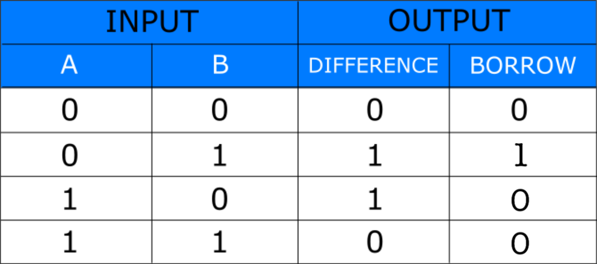
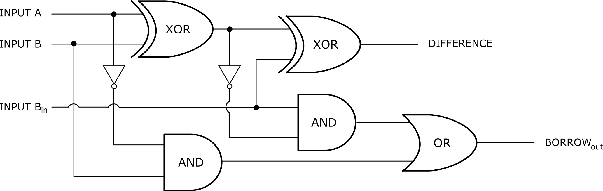
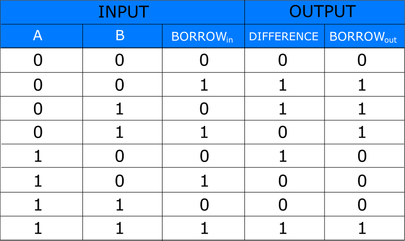

Digital Electronics
Study and Verification of Truth Table of Binary Subtractor
Aim
To study and verify the Truth Table of Binary Subtractor.
Theory
INTRODUCTION
A Binary Subtractor is a digital circuit that performs the arithmetic subtraction of two binary numbers from each other resulting the difference between the two numbers.
A basic Binary Subtractor circuit can be made from standard AND and Ex-OR gates allowing us to “subtract” between the two single bit binary numbers.
The difference of these two digits produces an output called the DIFFERENCE of the subtraction and a second output called the BORROW or Borrow-out( Bout ) bit according to the rules for binary subtraction.
Binary Subtractor are of 2 types.
1) Half Subtractor
2) Full Subtractor
1) HALF SUBTRACTOR
Half Subtractor is an arithmetic circuit which is used to perform subtraction of one binary bit from other.
It has two binary inputs A and B and two binary outputs DIFFERENCE(D) and BORROW(Bout). It performs the subtraction between the two inputs A and B and produces D(difference bit) and Bout(borrow bit) at the output as
DIFFERENCE(D) = A⊕B
BORROW(B) = A'B

Figure-1: Logic Circuit of HALF SUBTRACTOR
Figure-2: Truth Table of HALF SUBTRACTOR
2) FULL SUBTRACTOR
Full Subtractor is am arithmetic circuit that performs the subtraction between the two binary bits by considering borrow of the lower significant stage.
It has three inputs A, B, Bin and two outputs D and Bout, in which the two terminals corresponds to the two bits to be subtracted and a borrow bit Bin corresponds to the borrow operation and produces outputs, one corresponds to the D(difference) output and the other corresponds to Bout(borrow-output).
DIFFERENCE(D) = (A⊕B)⊕Bin
BORROW(B) =A'B+(A⊕B)'Bin
where, A⊕B =A'B+AB'
Figure-3: Logic Circuit of FULL SUBTRACTOR
Figure-4: Truth Table of FULL SUBTRACTOR
Procedure
1) HALF SUBTRACTOR
Step-1) Press the power supply switche  to connect supply to the circuit.
to connect supply to the circuit.
Step-2) Press the switches for inputs "A" and "B".
The switch in ON state is and the switch in OFF state is  .
.
Step-3) The output LEDs of DIFFERENCE and BORROW will glow according to the truth table.
The LED in OFF state is  and the LED in ON state is .
and the LED in ON state is .
Step-4) Repeat step-2 for all state of inputs and check the observations.
2) FULL SUBTRACTOR
Step-1) Press the power supply switche to connect supply to the circuit.
Step-2) Press the switches for inputs "A", "B" and "Bin".
The switch in ON state is and the switch in OFF state is .
Step-3) The output LEDs of DIFFERENCE and BORROW will glow according to the truth table.
The LED in OFF state is and the LED in ON state is .
Step-4) Repeat step-2 for all state of inputs and check the observations.
Simulator
Observation
Observe truth table for both HALF SUBTRACTOR and FULL SUBTRACTOR and verify with truth table given in theory section.
References
- William Gothmann H, Digital Electronics : An Introduction To Theory And Practice, Prentice Hall, 2nd ed. 1982
- M. Morris Mano, Michael D Ciletti, "Digital Design", Pearson, 4th ed. 2008
- Thomas L. Floyd, R. P. Jain, "Digital Fundamentals", Pearson, 11th ed. 2017
- S Salivahanan, S Arivazhagan, "Digital Circuits and Design", Vikas Publishing House Pvt Ltd., 3rd ed. 2009
- Ronald J. Tocci, Neal S. Widmer, Gregory L. Moss, "Digital Systems", Pearson, 10th ed. 2009
- Anil K. Maini, "Digital Electronics: Principles, Devices and Applications", Wiley-Blackwell, 2007
- Verification and interpretation of truth table for logic gates: https://de-iitr.vlabs.ac.in/digital-electronics-iitr/exp/truth-table-gates/theory.html
- Digital Logic Gates: https://www.electronics-tutorials.ws/logic/logic_1.html